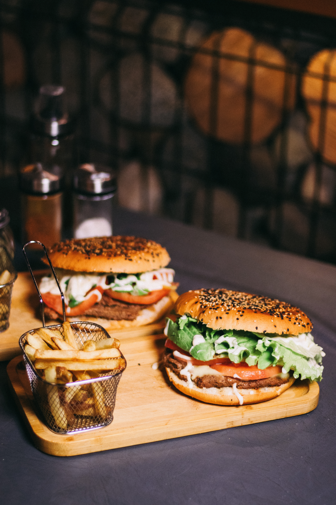
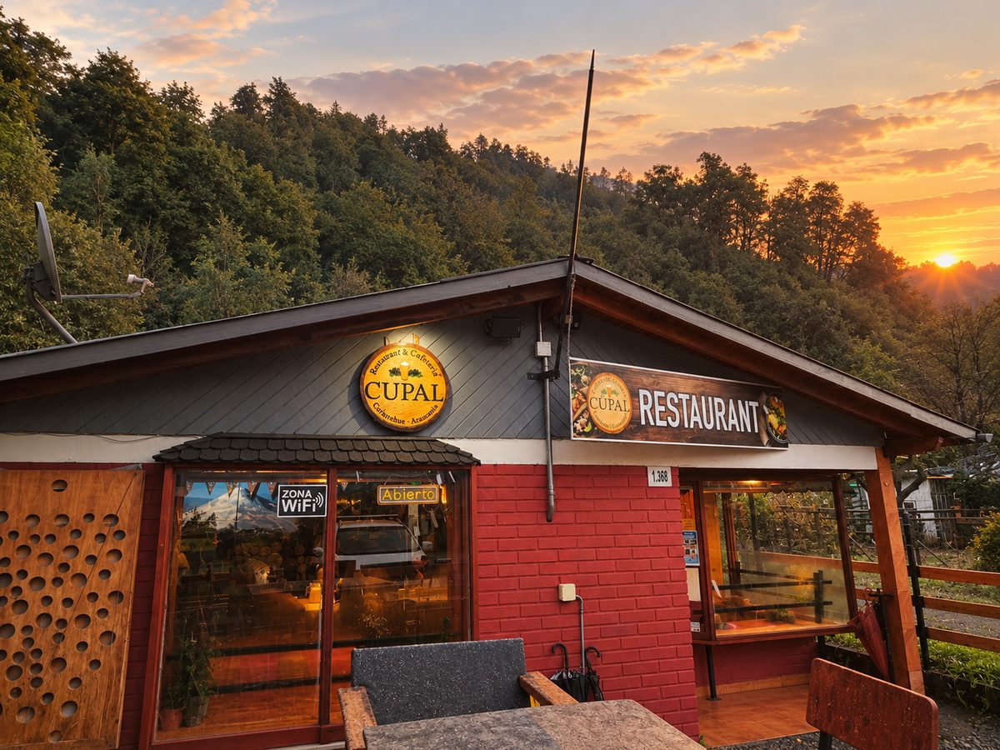

Restaurante en Curarrehue. Ven a disfrutar de una buena experiencia gastronómica en un ambiente acogedor.
Un punto de encuentro en Curarrehue pensado para hacer una pausa, compartir y disfrutar de los mejores sabores en la cordillera.
Ubicado en el entorno natural de la Región de La Araucanía, CUPAL es un restaurante concebido para quienes aprecian la buena mesa, el café bien preparado y un espacio cómodo donde relajarse.
Tanto si buscas comenzar la jornada con un café caliente y un desayuno reparador, como si deseas compartir un almuerzo, una pizza con amigos o una cerveza al atardecer, en CUPAL te esperamos con las puertas abiertas y la calidez del sur.
Variedad de preparaciones calientes y opciones para acompañar.

En CUPAL trabajamos con productos que se recolectan según la estación, como los digüeñes y las nalcas, y con ellos preparamos platos especiales que cambian a lo largo del año.
Se recolectan en su temporada y los usamos en preparaciones especiales.
Se recolectan en su temporada y los usamos en preparaciones especiales.
Disponibles según la estación y la recolección. Consúltanos por las preparaciones del momento.
Consultar preparaciones de temporadaCurarrehue es puerta de entrada a la cordillera. Aquí te dejamos dónde alojar y qué visitar para que aproveches tu viaje al máximo.
Información referencial. Horarios, valores y disponibilidad pueden cambiar; confirma directamente con cada servicio antes de tu visita. ¿Necesitas una recomendación? Escríbenos y te orientamos.
Pedir recomendaciónCUPAL nace en Curarrehue con la ilusión de crear un espacio donde la calidez cordillerana y el buen sabor se unan en cada visita.
Somos un restaurante pensado para acoger a vecinos de la comuna, familias y viajeros que recorren la hermosa Región de La Araucanía. Nuestro compromiso es ofrecer una atención cercana, preparaciones hechas con cariño y un ambiente donde siempre te sientas bienvenido.
Atención amable, sincera y familiar en cada mesa.
Comida apetitosa, café aromatizado y bebidas frescas.
Inspirados en los bosques de araucarias y ríos de Curarrehue.
El lugar perfecto para juntarse, conversar y celebrar.

“Un café caliente por la mañana, una buena conversación por la tarde y un brindis al atardecer: eso es CUPAL.”
Planifica tu visita a CUPAL. Envíanos tu solicitud y nuestro equipo confirmará la disponibilidad directamente contigo por WhatsApp.
Para garantizar la mejor experiencia y una atención personalizada, en CUPAL confirmamos cada consulta de forma manual y transparente:
Indica tu nombre, número de personas, fecha deseada y hora preferida.
El sistema creará un mensaje listo para enviar directamente a CUPAL.
Nuestro personal responderá para confirmar la mesa y recibirte como te mereces.
No generamos confirmaciones automáticas sin verificar el local. Así evitamos esperas o sobrecupos.
Visítanos en Curarrehue y disfruta de una experiencia gastronómica única en la cordillera.
WhatsApp y llamadas: +56 9 [Por confirmar]
Consultas y reservas manuales directamente a nuestro canal oficial.